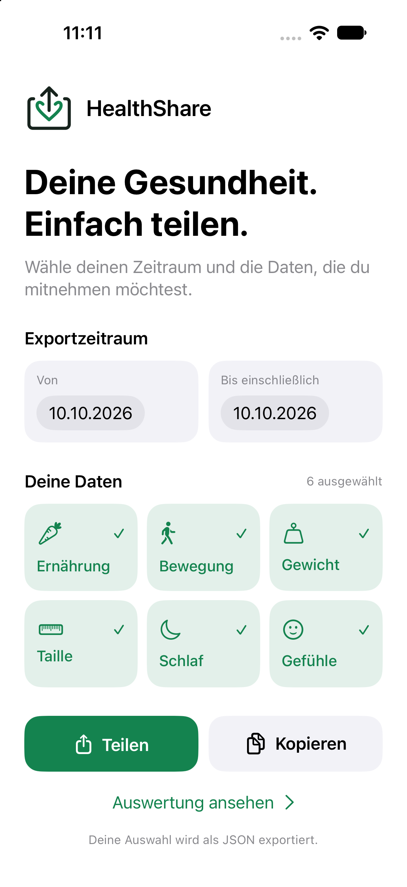
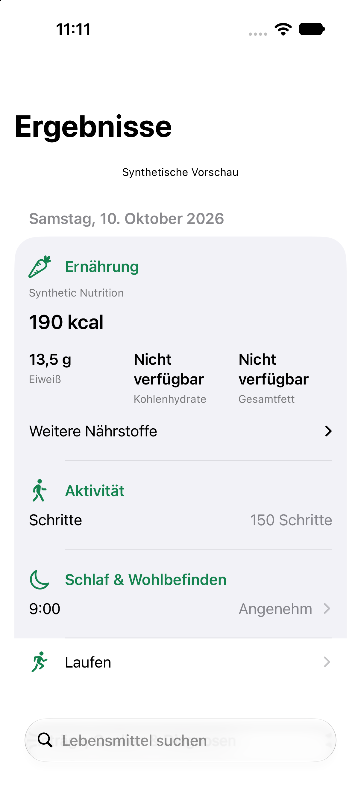

Auswählen
Ernährung, Bewegung, Gewicht, Taille, Schlaf und Gefühle. Du entscheidest, welche Kategorien gelesen werden.
Wähle einen Zeitraum und die Daten, die du brauchst. HealthShare macht daraus einen übersichtlichen JSON-Export — direkt auf deinem iPhone oder iPad.
Kostenlos · Deutsch & EnglischApp-Store-Veröffentlichung in Vorbereitung. iOS / iPadOS 27 oder neuer.
Ernährung, Bewegung, Gewicht, Taille, Schlaf und Gefühle. Du entscheidest, welche Kategorien gelesen werden.
Tagesübersichten, Makronährstoffe und Quellen helfen dir, deine aufgezeichneten Daten einzuordnen.
JSON wird erst beim Kopieren oder Teilen erzeugt. Du wählst, wo dein Export landet.

Sieh dir deine Daten nach Tagen und Kategorien an. Prüfe Quellen und einzelne Einträge. Fehlende Werte bleiben erkennbar, statt als gemessene Nullwerte zu erscheinen.
Schlafdaten werden anhand einer ausgewählten Quelle zusammengefasst. Neue Körpermessungen bleiben von fortgeschriebenen Werten unterscheidbar.
Die Abbildungen zeigen Beispieldaten. Verfügbare Daten hängen von Apple Health, deinen Apps und deinen Berechtigungen ab.Fragen zu HealthShare? Schreib an info@eggnition.com. Nenne bitte deine iOS-Version und beschreibe das Problem. Bitte sende zunächst keine Gesundheitsdaten oder Exporte.
HealthShare kann nur Daten lesen, die andere Apps in Apple Health bereitstellen und für die du Zugriff erlaubst. Prüfe die Quelle in Apple Health sowie die Freigaben für HealthShare.
Die Auswertung erfolgt lokal. Die App nutzt kein Benutzerkonto, keine Werbung und kein Tracking. Du entscheidest selbst über kopierte oder geteilte Exporte.